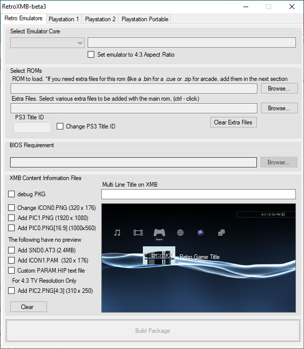

PS3 RetroXMB
Convertir Juegos ISO de PS2 a PKG en nuestra computadora (PC, Notebook), de forma fácil y sencilla sin más dificultades.

Para esta Guia
Requisitos para este tutorial
- PC o Notebook con Windows 7, 8, 8.1, 10
- Para descomprimir archivos .rar o .zip
- Juego de PS2 en Formato ISO
- Descargamos los archivos
- Descomprimimos el archivo .rar o .zip
- RetroXMB Convertidor PKG.rar
- Con la última versión disponible
- Una vez descargado nuestro archivo
- Lo extraemos y ejecutamos
- Buscamos un juego de PS2 en formato ISO
- Buscamos nuestro archivo RetroXMB Convertidor PKG.rar y lo extraemos
- Buscamos la aplicación RetroPS3.exe y la ejecutamos (si hay problemas la ejecutamos como administrador) 
- Una vez iniciado (si es la primera vez salen unas alertas le damos a todo aceptar y listo)
- En la pestaña de Playstation 2
- Seleccionamos nuestra ISO con Browse…
- Podemos colocar imágenes de fondo al menú XMB
- Si queremos le damos cada imagen respetando las medidas y el formato
- Change es la caratula más chica del juego
- Add PIC1 es la imagen de fondo
- Para empezar a convertir nuestro juego le damos a Build Package
- Y esperamos que termine de crear nuestro PKG
- Guardamos nuestro archivo
- Vamos a buscar nuestro archivo en la carpeta
created_pkgs/PS2donde estaba nuestra aplicación - Y salimos del programa
- Una vez terminado
- Copiamos nuestro pkg recién creado a nuestra unidad USB si pesa mas de 4GB hay que pasarlo por FTP
- Y copiamos el rap para nuestros juegos de PS2 que se encuentra en la carpeta
reactpsn_usb_exdata - El archivo 2P0001-PS2U10000_00-0000111122223333.rap lo copiamos al USB dentro de la carpeta
exdata - Y listo
- Lo conectamos a nuestra consola el USB
- Para instalar el .pkg nos vamos a Administrar archivos PKG
- Seleccionamos Instalar archivos PKG/Directorio estándar (USB)
- Y instalamos los pkg de nuestra aplicación
- Una vez instalada estaríamos listo
- Y listo
Para Empezar este Tutorial
×